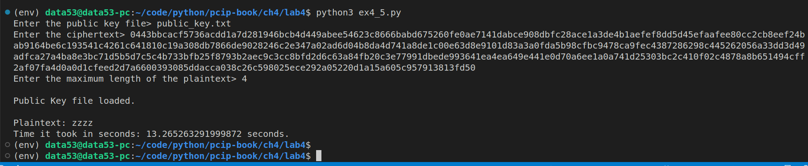
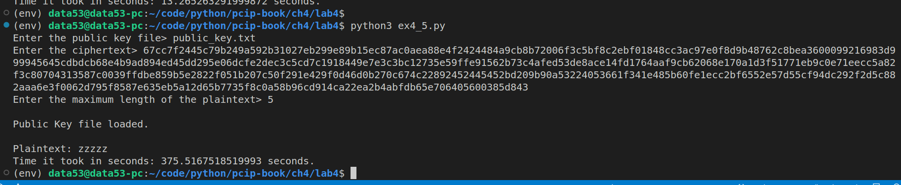

EXERCISE 4.5: WAITING IS THE HARDEST PART
Modify the brute-force program to try all possible words of five or fewer letters. Measure the time it takes (worst case) to brute force a four-letter word vs a five-letter word. About how many times longer does it take and why? How long would it take to try all possible six-letter words?
Question: How may words can be formed using at most \(n\) characters?
| No of Characters | Number of words formed using at most \(n\) characters |
|---|---|
| \(4\) | \(26 + 26^2 + 26^3 + 26^4 = 475,254\) |
| \(5\) | \(26 + 26^2 + 26^3 + 26^4 + 26^5 = 12,356,630\) |
| \(6\) | \(26 + 26^2 + 26^3 + 26^4 + 26^5 + 26^6 = 321,272,406\) |
| \(n\) | \(\frac{26}{25}(26^n-1)\) |
# ex4_5.py
import string
import gmpy2,os, binascii
from cryptography.hazmat.backends import default_backend
from cryptography.hazmat.primitives.asymmetric.types import PublicKeyTypes
from cryptography.hazmat.primitives import serialization
# This module is defined in the solution of Exercise 4.1
import listing4_4
import timeit
# taken from solution of Exercise 2.7
def generate(alphabet, max_len):
if max_len <= 0: return
for c in alphabet:
yield c
for c in alphabet:
for next in generate(alphabet, max_len-1):
yield c + next
def rsa_encrypt(pk, m: str):
'''
pk: is the public key.
m: is the message in strings.
'''
m = m.encode()
m = listing4_4.bytes_to_int(m)
# c is the ciphertext in integer
c = listing4_4.simple_rsa_encrypt(m = m, public_key=pk)
# change c into bytes.
c = listing4_4.int_to_bytes(c)
# hexlify c and return it.
return c.hex()
def main(public_key_file: str, ciphertext: str, length_of_plaintext: int):
public_key = None
if not os.path.exists(public_key_file):
print("File does not exist.")
exit(-1)
with open(public_key_file, 'rb') as f:
public_key = serialization.load_pem_public_key(
data=f.read(),
backend=default_backend()
)
print("\nPublic Key file loaded.\n")
for possible_plaintext in generate(alphabet=string.ascii_lowercase, max_len=length_of_plaintext):
if rsa_encrypt(pk=public_key, m=possible_plaintext) == ciphertext:
# we have successfully found a pre image.
print(f"Plaintext: {possible_plaintext}")
break
else:
print("No preimage found.")
if __name__ == '__main__':
public_key_file = input("Enter the public key file> ")
ciphertext = input("Enter the ciphertext> ")
max_length = int(input("Enter the maximum length of the plaintext> "))
total_execution_time = timeit.timeit(
stmt=f"main(public_key_file='{public_key_file}', ciphertext='{ciphertext}', length_of_plaintext={max_length})",
setup="from __main__ import main",
number = 1
)
print(f"Time it took in seconds: {total_execution_time} seconds.")Worst case is achieved when the plaintext is zzzz (for the four-letter word case) and zzzzz (for the five-letter word case).
 
Note that the public key I was using in the above sessions was the same public key I used in Execrsie 4.4.
Measure the time it takes (worst case) to brute force a four-letter word vs a five-letter word. About how many times longer does it take and why?
As shown above: * the time it took to bruteforce a four-letter word is about \(13.27\) seconds. * the time it took to bruteforce a five-letter word is about \(375.52\) seconds.
Thus the time it takes to bruteforce a five-letter word is about the same as \(28\) times the time it takes to bruteforce a four-letter word. We got a number closer to \(26\) because there are \(26\) letters in our alphabet.
How long would it take to try all possible six-letter words?
My guess is $10,630 57 $.